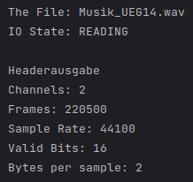
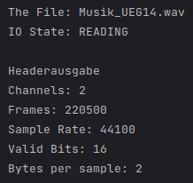
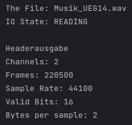

Bescheibung
Schneide aus den dir zugeschickten Audio-Files ab dem Zeitpunkt jeweils ein Stück mit der Länge 5 Sekunden und speichere dieses als WAV-Datei ab. Parameter für Musik: fa=44,1 kHz, stereo, für Sprache: fa=8 kHz mono, beide 16 bit Auflösung. Beim Schneiden achtest du darauf, dass der Schnitt am Beginn einer musikalischen Figur bzw. eines Satzes liegt.
Loesung
Bescheibung
Erkläre, warum die Audio-Files unterschiedliche Abtastfrequenzen haben.
Loesung
Die unterschiedlichen Abtastfrequenzen der Audio-Dateien können durch das Nyquist-Shannon-Abtasttheorem erklärt werden, das besagt, dass die Abtastfrequenz mindestens das Doppelte der höchsten Frequenz des Signals sein muss. Bei Sprachaufnahmen, deren Frequenzen hauptsächlich im unteren Bereich liegen (zwischen 300 Hz und 5 kHz), ist eine Abtastfrequenz von 8 kHz ausreichend. In Bezug auf allgemeine Audioaufnahmen, die den gesamten Hörbereich des Menschen (bis zu 20 kHz) abdecken sollen, ist eine Abtastfrequenz von 44,1 kHz notwendig. Dieser Standard bietet auch zusätzlichen Raum für die Filterung des Signals, falls erforderlich.
Bescheibung
Lies die Musik- und die Sprachdatei mit wave_io ein und erkläre die Angaben im Header!
Loesung

Channel:
Der Channel gibt an, wie viele Kanäle übertragen werden. Hier kann man zwischen Mono (1 Kanal) und Stereo (2 Kanäle)
unterscheiden. Bei z.B. Surround-Sound können auch mehr Kanäle verwendet werden.
Frames:
Die Frames entsprechen der Abtastfrequenz multipliziert mit der Dauer der Audio-Datei in Sekunden und stellen damit
die Abtastzeitpunkte über die gesamte Audio-Datei hinweg dar. Jeder Frame enthält eine Information über die
Amplitude zum jeweiligen Zeitpunkt in der Audio-Datei.
Sample Rate:
Die Sample Rate ist die Abtastfrequenz, die angibt, wie häufig eine Datei pro Sekunde abgetastet wird. Sie
diskretisiert damit die Zeitachse.
Valid Bits:
Die Valid Bits geben die Ausnutzung der bytes per sample an.
Bytes per sample:
Die bytes per sample beschreiben die Anzahl der Bytes, die zum Speichern eines Samples verwendet werden. Sie
diskretisieren damit die Höhe der Amplitude.
Bescheibung
Berechne die Bitrate für die beiden Dateien!
Loesung
Formel für Datenrate
Bitrate = Abtastfrequenz * Bitauflösung * Kanäle
oder auch:
rate = fa * N * K
fa : Abtastfrequenz in Hz
N: Auflösung in bit
K: Anzahl Kanäle
Musik_UEG14.wav
Bitrate = 44100 * 16 * 2 = 1411200 bit/s = 1411,2 kbit/s
Sprache_UEG14.wav
Bitrate = 8000 * 16 * 1 = 128000 bit/s = 128 kbit/s
Bescheibung
Modifiziere wave_io dahingehend, dass die Samples in der WAV-Datei in eine (lesbare) ASCII- Datei geschrieben werden. Lies die von mir geschickten Sinusdateien (Sampling-Frequenz: 16 kHz) ein und bestimme aus den resultierenden Zahlenfolgen in der ASCII-Datei die Frequenz der Sinus- Schwingungen. Begründe!
Loesung
Der Output-Ausschnitt der sine_lo01.wav-Datei zeigt eine Abtastfrequenz von ungefähr 11 Abtastpunkten pro Sinusperiode. Die Berechnung ergibt sich demnach wie folgt: Frequenz: 16 kHz / 11 = 1.45 kHz Daraus ergibt sich eine Frequenz von 1.45 kHz.
Der Output-Ausschnitt der sine_hi03.wav-Datei zeigt eine Abtastfrequenz zwischen 2 und 3 Abtastpunkten pro Sinusperiode. Nehmen wir 2,5 Die Berechnung ergibt sich demnach wie folgt: Frequenz: 16 kHz / 2.5 = 5.5 kHz Daraus ergibt sich eine Frequenz von 5.5 kHz.
Beschreibung
Überprüfe deine Schätzung mit dem Spektralanalyse-Tool GRAM. (Vorgehensweise: Menüpunkt Analyze File, Einstellungen: Freq Scale: Linear, FFT Size: 512, Time scale: 1 msec)
Loesung
Die GRAM-Auswertungen der Dateien zeigen das die Berechnungen aus 2.1 korrekt sind. Wie zu erwarten ist die frequenz der sine_hi03 etwas abweichend da wir mit einem mittelwert gerechnet haben.
Beschreibung
Bei der zeitlichen Diskretisierung eines Analogsignals muss das sogenannte Abtasttheorem eingehalten werden. Wie lautet es und wie lässt sich der Grenzfall, für den es gerade noch gilt, illustrieren? Erstelle hierzu eine Zeichnung und erläutere.
Loesung
Theorem besagt, dass die Abtastfrequenz mindestens doppelt so hoch sein sollte wie die höchste Frequenz, die im
Signal erfasst werden soll.
Die Formel, um das die notwendige Abtastfrequenz zu berechnen lautet: fa > 2 * fmax, wobei fa die Abtastfrequenz und
fmax die höchste im Audiosignal enthaltene Frequenz beschreibt.
Die roten Kreuze beschreiben die minimal notwendigen Abtastpunkte die benoettigt werden damit die Frequenz des Originals noch rekonstruiert werden kann.
Beschreibung
Bei herkömmlichen Soundkarten tritt systembedingt kein Aliasing auf, weil das Audiosignal stets geeignet vorbehandelt wird. Wie sieht diese Vorbehandlung aus?
Loesung
Die Vorbehandlung besteht aus einem Tiefpassfilter, der das Signal vor der Abtastung filtert. Dadurch werden alle Frequenzen oberhalb der halben Abtastfrequenz herausgefiltert.
Beschreibung
Modifiziere wave_io dahingehend, dass vom eingelesenen Audiosignal jeder zweite Abtastwert verworfen wird und das resultierende Signal abgespeichert wird. Der Header muss natürlich entsprechend verändert werden!
Loesung
// 2e Downsampling
for (int i=0; i < samples/2;i++) {
readWavFile.sound[i] = readWavFile.sound[i * 2];
}
sampleRate = sampleRate / 2;
numFrames = numFrames / 2;
WavFile.write_wav(outFilename, numChannels, numFrames, validBits, sampleRate, readWavFile.sound);
Beschreibung
Wende das erstellte Programm auf die von mir geschickten Sinusdateien an (sine_hiXX.wav und sine_loXX.wav) an. Welche Frequenzen erscheinen nach dem Down-Sampling? Was würde passieren, wenn man geeignet bandbegrenzen würde?
Loesung
sine_lo01_down.wav
sine_hi03_down.wav
Die Frequenz der sine_hi03.wav-Datei betrug vor dem Down-Sampling 6 kHz und danach nur noch 2 kHz. Bei der sine_lo01.wav-Datei bleibt auch nach dem Downsampling die Frequenz von 1.45 kHz erhalten. Bei einer geeigneten Bandbegrenzung wäre nach dem Downsampling bei der sine_hi06.wav-Datei kein Ton mehr zu hören , weil alle Frequenzen oberhalb von 4 kHz durch einen Tiefpassfilter abgeschnitten werden würden.
Beschreibung
Die herkömmlichen PC-Soundkarten arbeiten meist entweder mit 16 oder 8 bit-Auflösung. Wie groß ist die Anzahl bei diesen beiden Werten darstellbaren Amplitudenwerten?
Loesung
Um festzustellen, wie viele verschiedene Amplitudenwerte dargestellt werden können, wird berechnet, wie viele Optionen für 16 bzw. 8 Bit zur Verfügung stehen. Durch die Berechnung von 2^16 = 65.536 und 2^8 = 256 ergeben sich 65.536 Optionen für 16 Bit und 256 Optionen für 8 Bit, die jeweils die Anzahl der möglichen Amplitudenwerte darstellen.
Beschreibung
Modifiziere wave_io dahingehend, dass die Bitanzahl reduziert wird. Dazu werden alle Samples durch eine Potenz von 2 geteilt (Integer-Division ohne Rest). Damit das resultierende Signal nicht leiser wird als das Original, wird die Operation durch Multiplikation mit derselben 2er Potenz kompensiert. Zu beachten: Der Datentyp hat nach wie vor 16 bit!
Loesung
// 3b Bitreduzierung
int reduced_bits = 1;
for (int i=0; i < samples;i++) {
int pot = (int) Math.pow(2, reduced_bits);
readWavFile.sound[i] = (short) (readWavFile.sound[i]/pot*pot);
}
WavFile.write_wav(outFilename, numChannels, numFrames, validBits, sampleRate, readWavFile.sound);
Beschreibung
Mit dem entstandenen Programm sollen nun die in Aufgabe 1 erzeugten Wave-Dateien (Sprache und Musik) bitreduziert werden. Ab welcher Bitanzahl tritt eine hörbare, also deutliche Verschlechterung der Qualität ein? Bei wie viel Bit ist das Sprachsignal noch verständlich?
Loesung
Eine Verringerung der Bitrate um 10 Bits führt zwar zu einer erkennbaren, aber bereits deutlich schlechteren Signalqualität. Bei einer Reduktion um 12 Bits wird das Signal jedoch so stark beeinträchtigt, dass Musik und Sprache nicht mehr verständlich sind.
Dateien
um 10 bit reduziert:
Sprachdatei nach einer Reduzierung um 10 bit
Musikdatei nach einer Reduzierung um 10 bit
um 12 bit reduziert:
Sprachdatei nach einer Reduzierung um 12 bit
Musikdatei nach einer Reduzierung um 12 bit
Beschreibung
Was charakterisiert das entstehende Quantisierungsgeräusch bei der Bitreduzierung und macht es besonders störend?
Loesung
Das Quantisierungsgeräusch entsteht durch die Bitreduzierung, da die Amplitudenwerte der Samples nicht mehr so genau dargestellt werden können. Das Quantisierungsgeräusch ist besonders störend, da es sich um ein Rauschen handelt, das sich über das gesamte Frequenzspektrum erstreckt und somit nicht einfach durch einen Tiefpassfilter entfernt werden kann.
Beschreibung
Modifiziere dein Programm noch einmal so, dass auch das Differenzsignal zwischen Original und bitreduziertem Signal, d.h. der Quantisierungsfehler ausgegeben werden kann.
Loesung
// 3e Bitreduzierung Differenz
int reduced_bits = 1;
for (int i=0; i < samples;i++) {
short temp = readWavFile.sound[i];
int pot = (int) Math.pow(2, reduced_bits);
readWavFile.sound[i] = (short) (readWavFile.sound[i]/pot*pot);
diff[i] = (short) ((temp - readWavFile.sound[i]) * Math.pow(2, 16-reduced_bits-1));
}
WavFile.write_wav(outFilename, numChannels, numFrames, validBits, sampleRate, diff);
Dateien
Quantisierungsfehler bei Bit-Reduzierung um 1 Bit:
Quantisierungsfehler der Sprachdatei nach einer Reduzierung um 1 bit
Quantisierungsfehler der Musikdatei nach einer Reduzierung um 1 bit
Quantisierungsfehler bei Bit-Reduzierung um 10 Bit:
Quantisierungsfehler der Sprachdatei nach einer Reduzierung um 10 bit
Quantisierungsfehler der Musikdatei nach einer Reduzierung um 10 bit
Beschreibung
Welchen Charakter hat das Rauschen bei einer Reduktion um 1bit und wie verändert es sich bei zunehmender Bit-Reduktion?
Loesung
Wenn die Bitrate um 1 Bit verringert wird, ist das Rauschen immer noch dominant, aber bei zunehmender Reduktion der Bitrate wird die Musik oder die Stimme im Rauschen immer deutlicher wahrnehmbar.
Originale Dateien

Bitreduzierte um 10 Bit
Bitreduzierte um 12 Bit
Quantisierungsfehler bei Bit-Reduzierung um 1 Bit
Quantisierungsfehler bei Bit-Reduzierung um 10 Bit